← PhenoVoxel ArchiveDigitalLife collection · v0.6.84 · 7 November 2026
Twelve more lives to examine.
All twelve previously pending downloads are now native models in the 363-species archive. 10 retain creator animation; the two frog scans remain static.
Surface and support correctionsRestored missing source texture links, retained photographed pigment and source surface maps, corrected material response, and repaired fish fin transparency. Removed both fused frog platforms and the rhinoceros reference sphere. The studio floor is hidden for every model.
These source-derived exteriors and creator clips have not been independently validated as biomechanics. The frog scans did not photograph the contact underside; reconstructed patches are identified. Dedicated reference photographs and occurrence-count snapshots remain pending for these additions. All twelve source assets are CC BY-NC 4.0; full creator and collaborator credits are retained.
Subadult composite reconstructed from photographs, video and a scan
Shortfin mako
Isurus oxyrinchus · CC BY-NC 4.0
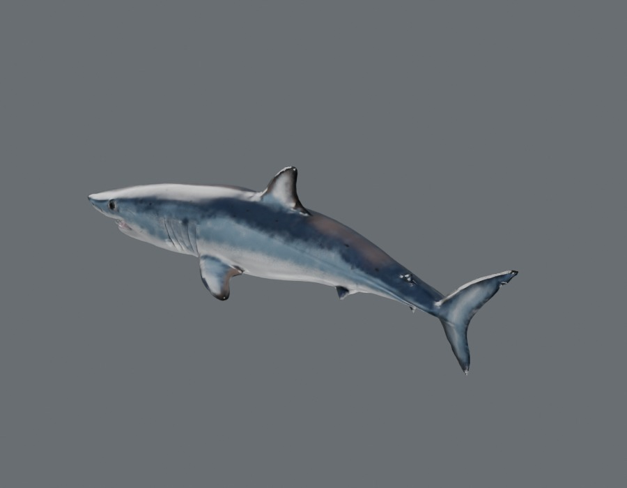
Exterior · actual Blender preparation render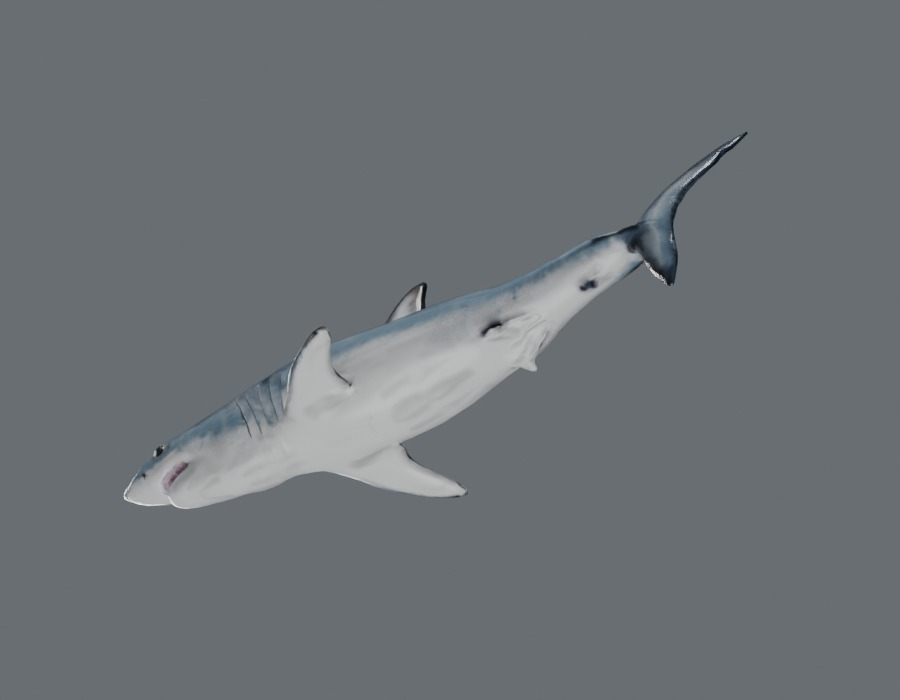
Underside · actual Blender preparation renderA streamlined lamnid shark with a conical snout, pointed teeth, short pectoral fins and a crescent-shaped caudal fin. Subadult composite reconstructed from photographs, video and a scan.
Creator movement plays on its original skeleton. Timing and forces are uncalibrated.
Animal geometry retained; studio/reference objects excluded and decorative floor hidden.
Creator attribution and source construction
This is a 3D animation of a subadult Shortfin Mako Shark (Isurus oxyrinchus). This is a composite shark model that was reconstructed using a combination of photographs and video from Joe Romeiro, and also referenced against a 3D photogrammetry scan of a subadult Mako shark (provided by Joshua Moyer).
We thank the Atlantic Shark Institute (Jon Dodd) and the Cape Eleuthera Institute (Nathan Robinson and Edd Brooks) for supporting and facilitating creation of the model. Nathan Robinson is now at Oceanogràfic.
CG artist Robert Gutierrez reconstructed this shark from photographs and other information using the open-access software Blender. As this model was recreated from photos and other data, we make no claim that it perfectly reflects an actual shark, but we have strived to be as anatomically correct as possible.
Downloads are freely available for creative and non-profit use. To inquire about licensing, please visit **www.digitallife3d.org**.
Louis; adult male reconstructed from a captive-animal scan
North American river otter
Lontra canadensis · CC BY-NC 4.0
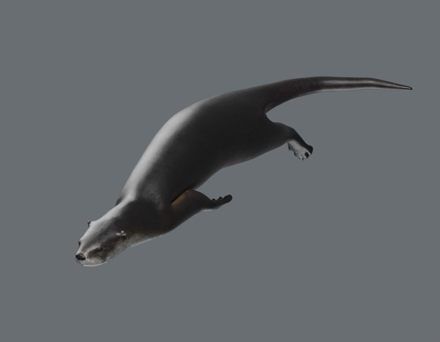
Exterior · actual Blender preparation render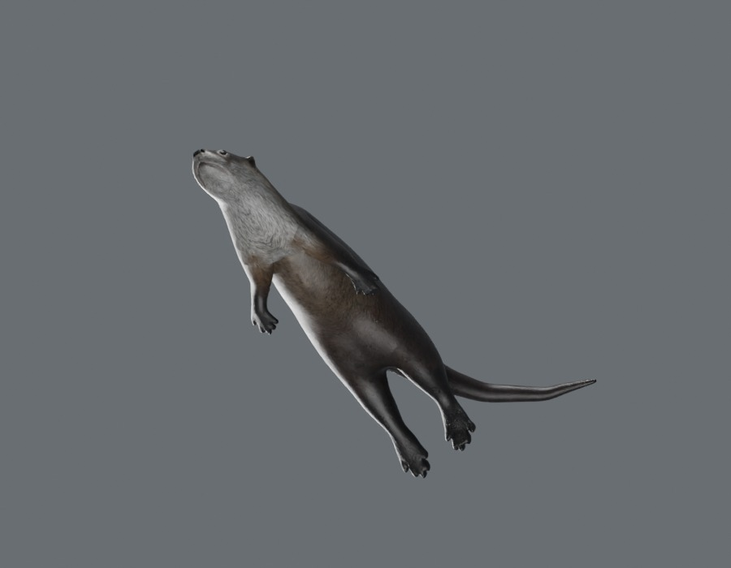
Underside · actual Blender preparation renderA streamlined mammal with dense brown fur, short limbs, webbed feet and a tapering muscular tail. Louis; adult male reconstructed from a captive-animal scan.
Creator movement plays on its original skeleton. Timing and forces are uncalibrated.
Animal geometry retained; studio/reference objects excluded and decorative floor hidden.
Creator attribution and source construction
This is an animation of an adult male North American Otter ( *Lontra canadensis*)
This 3D model was recreated as a 3D digital photogrammetry scan done on a captive otter ("Louis", approximately 4 years old) at the Maymont Nature Center (https://maymont.org/animals/nature-center/). His estimated mass was 19.6 kg.
CG artists Jer Bot, Johnson Martin and Robert Gutierrez used Blender to reconstruct the full otter from the scan and other images, as well as animate the movements. Thanks to the Maymont Nature Center, and the Richard Lewis Media Group (http://rlmg.com/), which provided funding for project.
Downloads are freely available for creative and non-profit use. To inquire about licensing, please visit www.digitallife3d.org.
Freja; adult female source reconstruction
Harbour porpoise
Phocoena phocoena · CC BY-NC 4.0
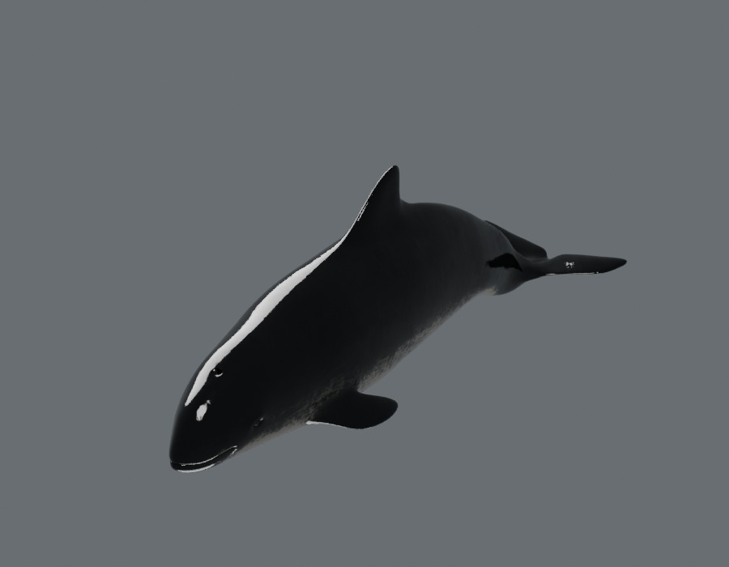
Exterior · actual Blender preparation render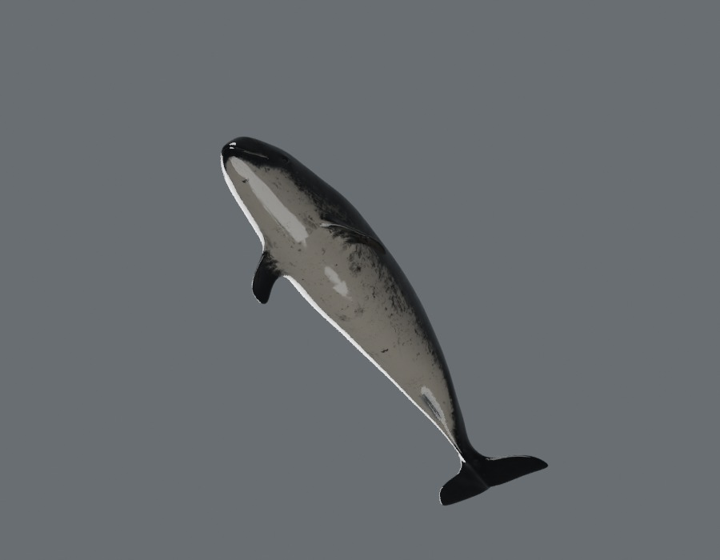
Underside · actual Blender preparation renderA small cetacean with a rounded head, no pronounced beak, triangular dorsal fin and dark back grading to a pale underside. Freja; adult female source reconstruction.
Creator movement plays on its original skeleton. Timing and forces are uncalibrated.
Animal geometry retained; studio/reference objects excluded and decorative floor hidden.
Creator attribution and source construction
This is a 3D animation of a live harbor porpoise ("Freja", Female, Total Length of 155.5 cm) that was recreated using a combination of photogrammetry, photography and video. This work was done in collaboration with Peter Madsen and Fredrik Christensen from the University of Aarhaus, CG artist Johnson Martin and others. The Fjord Baelt in Denmark kindly allowed us access to the animal.
Mesh accuracy was confirmed through correlation between digital and live measures.
Downloads are freely available for creative and non-profit use. To inquire about licensing, please visit **www.digitallife3d.org**.
Individual 730; scan-derived reconstruction
Blacktip shark
Carcharhinus limbatus · CC BY-NC 4.0
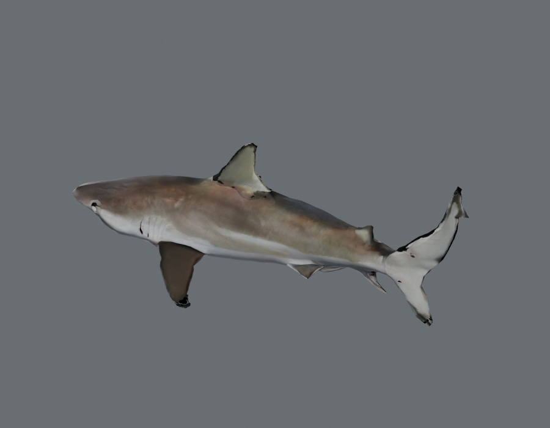
Exterior · actual Blender preparation render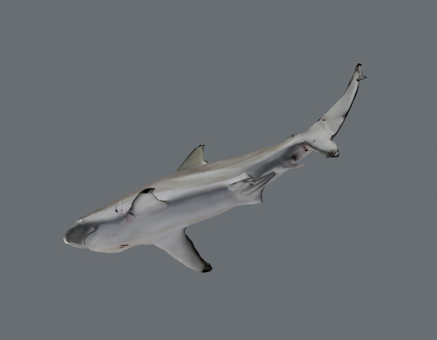
Underside · actual Blender preparation renderA streamlined shark with a pointed snout, five gill slits on each side and species-specific dark fin markings. Individual 730; scan-derived reconstruction.
Creator movement plays on its original skeleton. Timing and forces are uncalibrated.
Animal geometry retained; studio/reference objects excluded and decorative floor hidden.
Creator attribution and source construction
This is a 3D animation of a Blacktip shark (*Carcharhinus limbatus*, ID 730) captured in April 2016 in collaboration with the Discovery Channel and Dr. Neil Hammerschlag at the Universiy of Miami. The shark was captured, photographed with the Beastcam technology, and released unharmed. 3D artist Robert Gutierrez converted the raw photogrammetry scan to this low-poly model, as well as animated it.
Downloads are freely available for creative and non-profit use. To inquire about licensing, please visit **www.digitallife3d.org**.
Nemesis; adult female reconstructed from calibrated video
Great hammerhead
Sphyrna mokarran · CC BY-NC 4.0
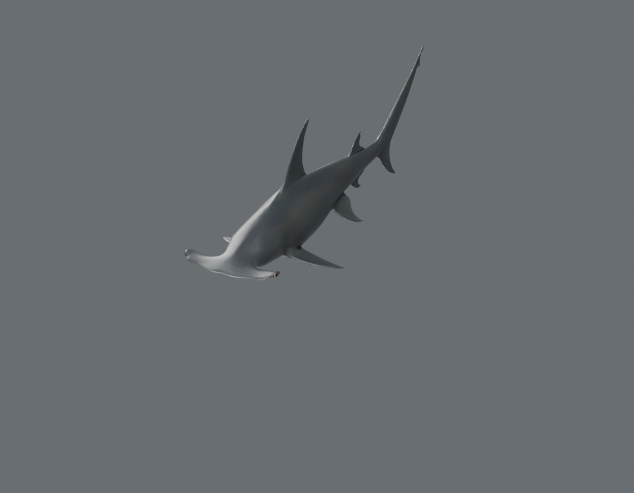
Exterior · actual Blender preparation render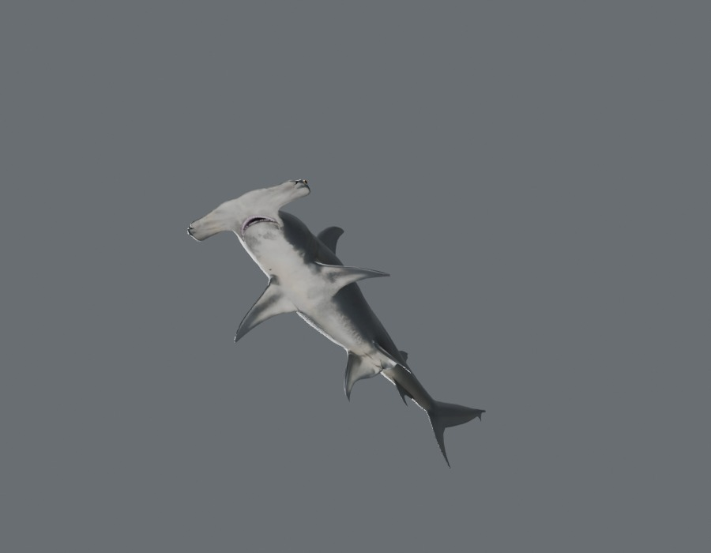
Underside · actual Blender preparation renderA large hammerhead with a broad, nearly straight cephalofoil and a tall, strongly curved first dorsal fin. Nemesis; adult female reconstructed from calibrated video.
Creator movement plays on its original skeleton. Timing and forces are uncalibrated.
Animal geometry retained; studio/reference objects excluded and decorative floor hidden.
Creator attribution and source construction
This is an animation of an adult female **Great Hammerhead Shark** (Sphyrna mokarran) that was reconstructed from multiple cameras arranged around a dive in South Bimini, Bahamas in February 2020. Casey Sapp coordinated all videography. Kevin Davidson kindly contributed useful reference photos.
CG artist **Jer Bot** used the software Blender to align these camera views to reconstruct the accurate shape and color of **Nemesis** (PIT tag 900236000107365), which had an estimated length of 329 cm based on laser photogrammetry. Nemesis commonly frequents dive spots near Bimini and is well-known to divers and scientists from the Bimini shark lab (www.biminisharklab.com).
The **ANGARI Foundation** (www.angari.org) coordinated and supported this research, along with Sean Williams, Ken Morton, Jonathan and Jameson Bayuk, Annabelle Brooks, and Vital Heim.
Downloads are freely available for creative and non-profit use. To inquire about licensing, please visit **www.digitallife3d.org**.
Adult composite of live photographs and a preserved scan
American eel
Anguilla rostrata · CC BY-NC 4.0
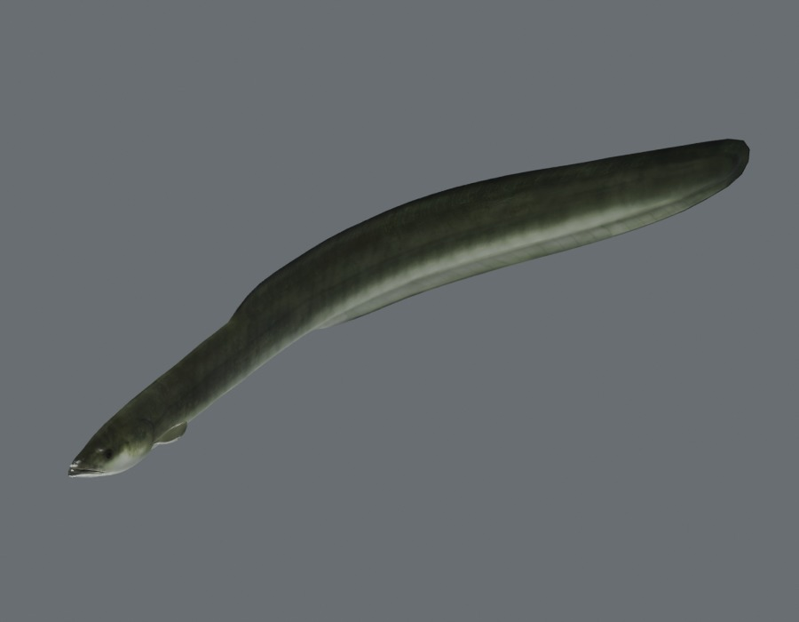
Exterior · actual Blender preparation render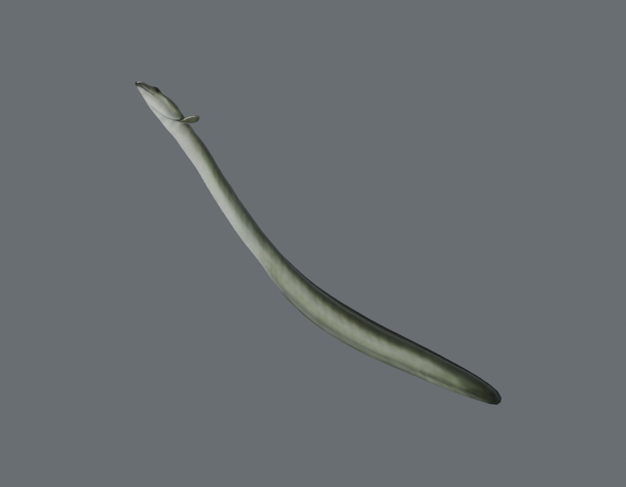
Underside · actual Blender preparation renderAn elongated eel with pectoral fins, no pelvic fins, and continuous dorsal, caudal and anal fin margins. Adult composite of live photographs and a preserved scan.
Creator movement plays on its original skeleton. Timing and forces are uncalibrated.
Animal geometry retained; studio/reference objects excluded and decorative floor hidden.
Creator attribution and source construction
This is an animation of an adult American eel
This 3D model is a composite of images from an adult American eel (Anguilla rostrata) housed at the Maymont Nature Center (https://maymont.org/animals/nature-center/), and a scan from a preserved American eel from the Natural History Collection at the University of Massachusetts at Amherst (https://bcrc.bio.umass.edu/nhc/home).
CG artists Jer Bot, Johnson Martin and Robert Gutierrez used Blender to reconstruct the full fish from these scans and images, as well as animate the movements. Thanks to the Maymont Nature Center, the Richard Lewis Media Group (http://rlmg.com/), and the Natural History Collection for facilitating the work.
Downloads are freely available for creative and non-profit use. To inquire about licensing, please visit **www.digitallife3d.org**.
Adult composite of live photographs and a preserved scan
Bluegill
Lepomis macrochirus · CC BY-NC 4.0
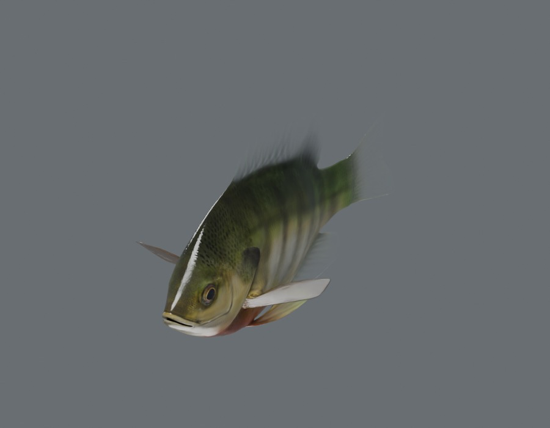
Exterior · actual Blender preparation render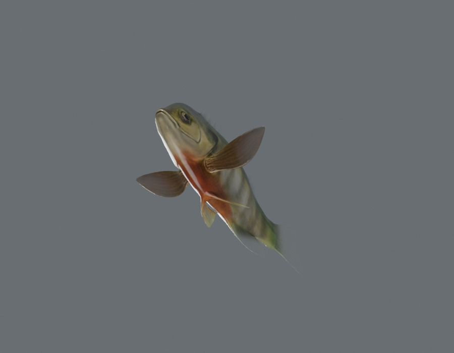
Underside · actual Blender preparation renderA deep-bodied sunfish with a dark opercular flap, spiny dorsal fin and source-specific blue-green and yellow pigmentation. Adult composite of live photographs and a preserved scan.
Creator movement plays on its original skeleton. Timing and forces are uncalibrated.
Animal geometry retained; studio/reference objects excluded and decorative floor hidden.
Creator attribution and source construction
This is an animation of an adult Bluegill.
This 3D model is a composite of images from an adult Bluegill (Lepomis macrochirus) housed at the Maymont Nature Center (https://maymont.org/animals/nature-center/), and a scan from a preserved Bluegill from the Natural History Collection at the University of Massachusetts at Amherst (https://bcrc.bio.umass.edu/nhc/home).
CG artists Jer Bot, Johnson Martin and Robert Gutierrez used Blender to reconstruct the full fish from these scans and images, as well as animate the movements. Thanks to the Maymont Nature Center, the Richard Lewis Media Group (http://rlmg.com/), and the Natural History Collection for facilitating the work.
Downloads are freely available for creative and non-profit use. To inquire about licensing, please visit **www.digitallife3d.org**.
Subadult composite of live photographs and a preserved scan
Longnose gar
Lepisosteus osseus · CC BY-NC 4.0
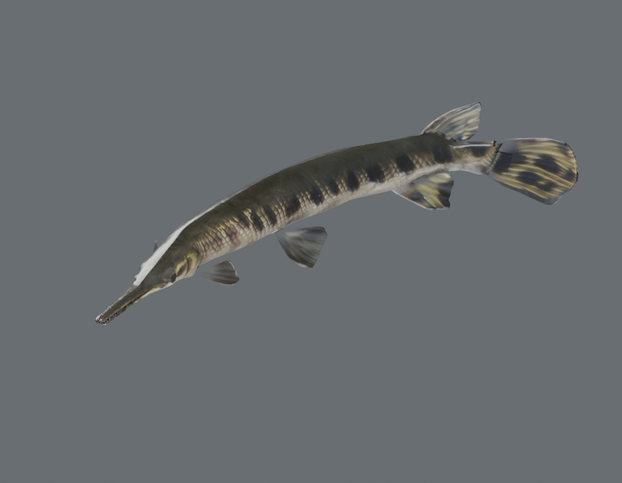
Exterior · actual Blender preparation render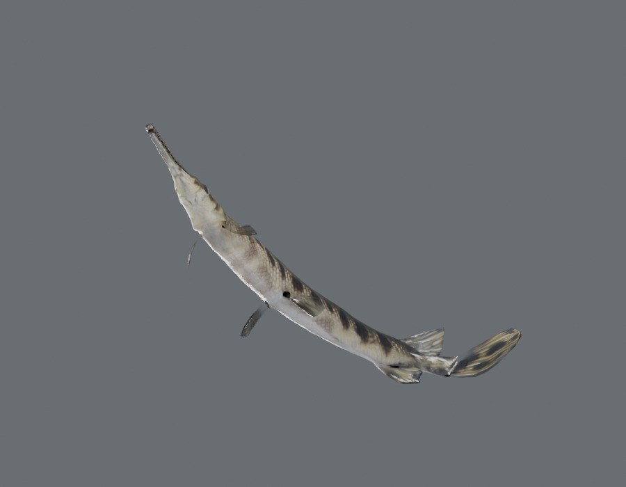
Underside · actual Blender preparation renderAn elongated fish with very long narrow jaws, interlocking ganoid scales and dorsal and anal fins set far back. Subadult composite of live photographs and a preserved scan.
Creator movement plays on its original skeleton. Timing and forces are uncalibrated.
Animal geometry retained; studio/reference objects excluded and decorative floor hidden.
Creator attribution and source construction
This is an animation of an subadult Longnose Gar.
This 3D model is a composite of images from a subadult Longnose Gar (Lepisosteus osseus) housed at the Maymont Nature Center (https://maymont.org/animals/nature-center/), and a scan from a preserved Longnose Gar from the Natural History Collection at the University of Massachusetts at Amherst (https://bcrc.bio.umass.edu/nhc/home).
CG artists Jer Bot, Johnson Martin and Robert Gutierrez used Blender to reconstruct the full fish from these scans and images, as well as animate the movements. Thanks to the Maymont Nature Center, the Richard Lewis Media Group (http://rlmg.com/), and the Natural History Collection for facilitating the work.
Downloads are freely available for creative and non-profit use. To inquire about licensing, please visit **www.digitallife3d.org**.
Subadult Atlantic-form composite; source uses historical oxyrhynchus spelling
Atlantic sturgeon
Acipenser oxyrinchus · CC BY-NC 4.0
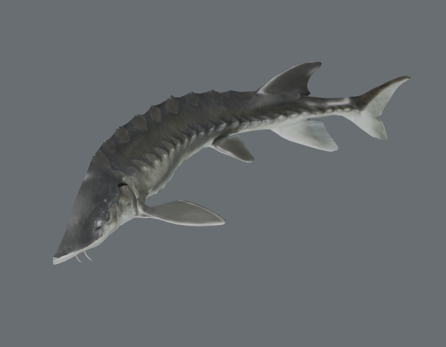
Exterior · actual Blender preparation render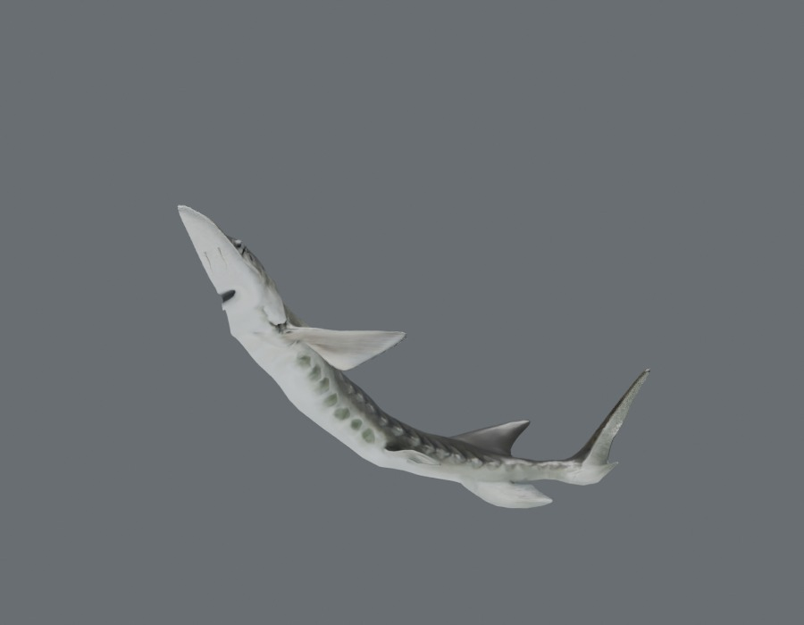
Underside · actual Blender preparation renderA sturgeon with five rows of bony scutes, an underslung mouth, sensory barbels and an asymmetric tail. Subadult Atlantic-form composite; source uses historical oxyrhynchus spelling.
Creator movement plays on its original skeleton. Timing and forces are uncalibrated.
Animal geometry retained; studio/reference objects excluded and decorative floor hidden.
Creator attribution and source construction
This is an animation of an subadult Atlantic Sturgeon.
This 3D model is a composite of images from a subadult Atlantic Sturgeon (Acipenser oxyrhynchus oxyrhynchus) housed at the Maymont Nature Center (https://maymont.org/animals/nature-center/), and a scan from a preserved Atlantic Sturgeon from the Natural History Collection at the University of Massachusetts at Amherst (https://bcrc.bio.umass.edu/nhc/home).
CG artists Jer Bot, Johnson Martin and Robert Gutierrez used Blender to reconstruct the full fish from these scans and images, as well as animate the movements. Thanks to the Maymont Nature Center, the Richard Lewis Media Group (http://rlmg.com/), and the Natural History Collection for facilitating the work.
Downloads are freely available for creative and non-profit use. To inquire about licensing, please visit **www.digitallife3d.org**.
Zoo Atlanta individual; static photogrammetry scan
Panamanian golden frog
Atelopus zeteki · CC BY-NC 4.0
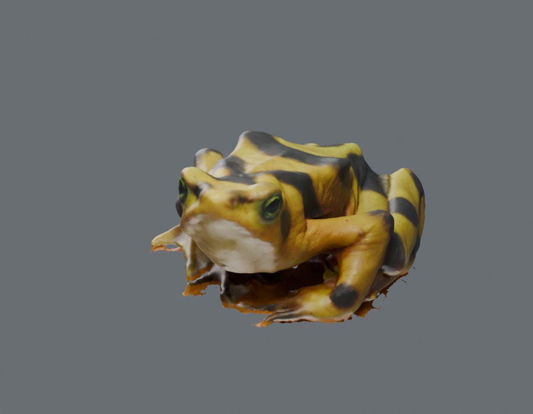
Exterior · actual Blender preparation render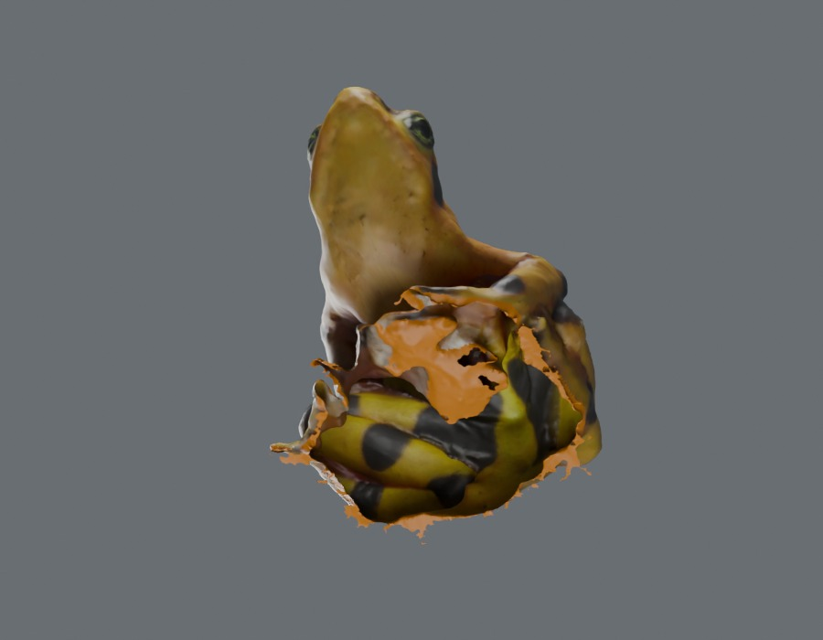
Underside · actual Blender preparation renderA slender golden frog with long limbs and source-specific yellow skin and dark markings. Contact underside areas hidden by the scan platform are reconstructed; their skin detail is not photographed. Zoo Atlanta individual; static photogrammetry scan.
Static source scan: inspect the held posture. Locomotion is not supplied.
Fused display platform and detached fragments removed. Contact patches hidden in the original scan are reconstructed; their lower-surface skin detail is unphotographed.
Creator attribution and source construction
This is a 3D model of Panamanian Golden frog (*Atelopus zeteki*) captured in Zoo Atlanta in March 2017.
This beautiful golden frog lives in tropical mountain forests and breeds in forest streams. It has the ability to secrete a variety of toxins to protect itself from predators. However, it is critically endangered due to an infectious fungal disease known as chytridiomycosis, deforestation, and water pollution.
Please go to our website (www.digitallife3d.org) to learn more.
The 3D model was created by the Beastcam MACRO technology.
Downloads are freely available for creative and non-profit use. To inquire about licensing, please visit **www.digitallife3d.org**.
UMass Richmond Lab individual; static photogrammetry scan
White’s tree frog
Litoria caerulea · CC BY-NC 4.0
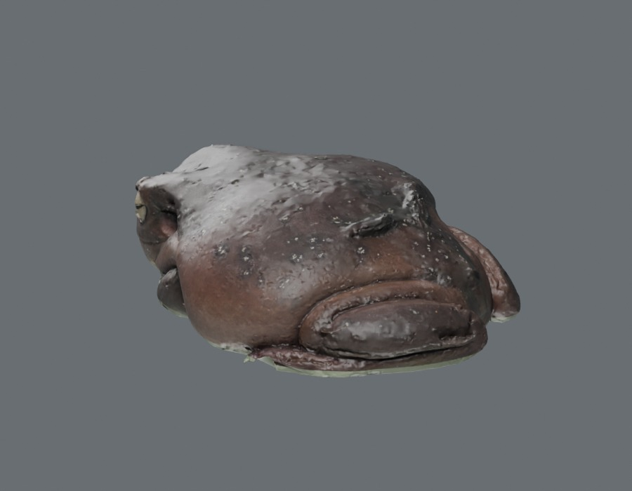
Exterior · actual Blender preparation render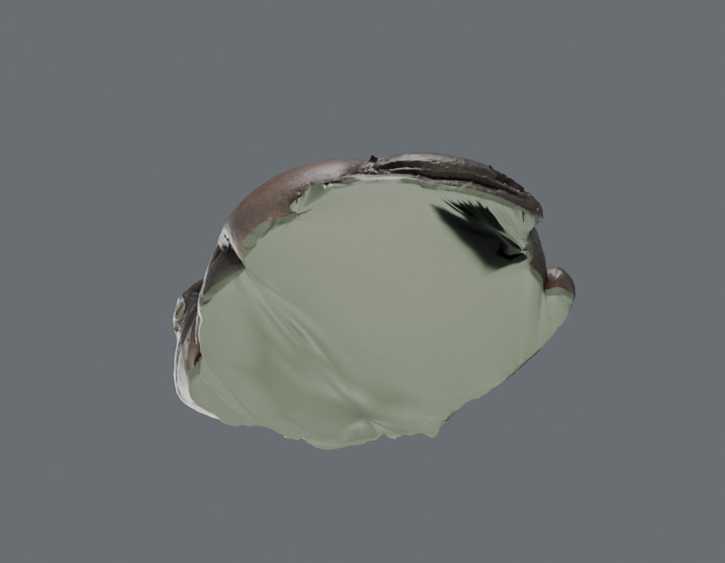
Underside · actual Blender preparation renderA robust tree frog with broad toe pads, horizontal pupils and a pale lower surface. Colour varies among individuals and conditions. Contact underside areas hidden by the scan platform are reconstructed; their skin detail is not photographed. UMass Richmond Lab individual; static photogrammetry scan.
Static source scan: inspect the held posture. Locomotion is not supplied.
Fused display platform and detached fragments removed. Contact patches hidden in the original scan are reconstructed; their lower-surface skin detail is unphotographed.
Creator attribution and source construction
This is a 3D model of a Whites Tree Frog (*Litoria caerulea*) captured at Richmond Lab at UMass Amherst in March 2017.
This frog is commonly kept as a pet due to its pleasant “dumpy” appearance and its docile behavior. Even when it is not kept as a pet, it can be found in mailboxes, toilet bowls, and meter boxes. In the wild, it can be found in a range of habitats from areas near streams to hills and plains far from water where they feed on various invertebrates.
Please go to our website www.digitallife3d.org to learn more.
The 3D model was created by the Beastcam technology.
Downloads are freely available for creative and non-profit use. To inquire about licensing, please visit **www.digitallife3d.org**.
Bakari; southern white rhinoceros from Perth Zoo
Southern white rhinoceros
Ceratotherium simum · CC BY-NC 4.0
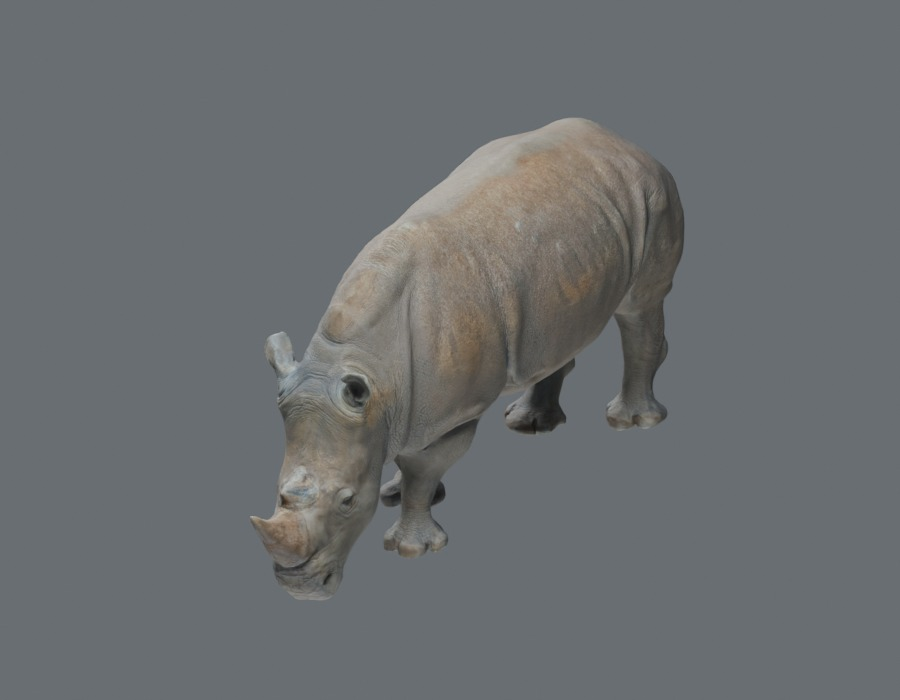
Exterior · actual Blender preparation render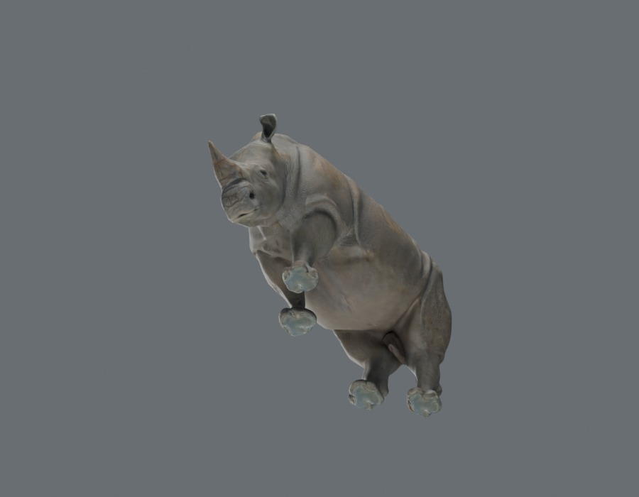
Underside · actual Blender preparation renderA large rhinoceros with a broad grazing muzzle, two nasal horns and thick, folded grey skin. The source represents the southern form. Bakari; southern white rhinoceros from Perth Zoo.
Creator movement plays on its original skeleton. Timing and forces are uncalibrated.
Animal geometry retained; studio/reference objects excluded and decorative floor hidden.
Creator attribution and source construction
This is a 3D model of Bakari, a **Southern Right Rhino** (Ceratotherium simum) from **Perth Zoo**, Western Australia, which was initially scanned using an array of 20 Canon G16 cameras. CG artist **Jer Bot** used the open source 3D animation software **Blender** (blender.org) to fully reconstruct the rhino. The mass of the Rhino is 2225 kg and its length is 2.1 meters. Reference photos were also used as a guide to create taxonomic features onto the 3D model using Blender's sculpting tools.
If you are interested in downloading this 3D model, please visit our website www.digitallife3d.org